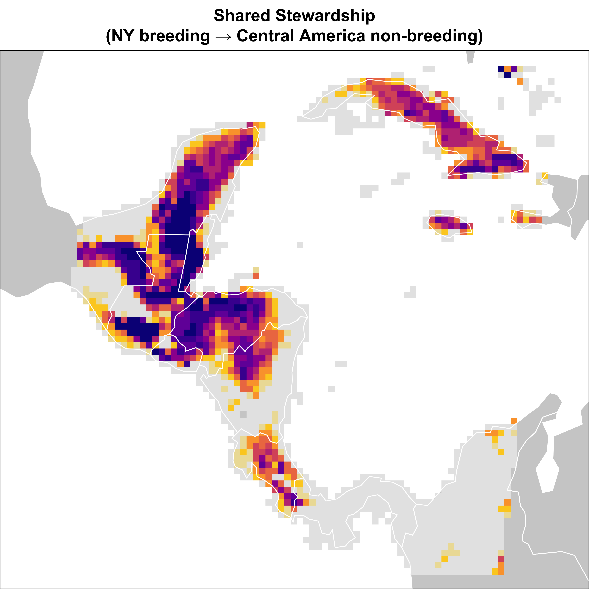
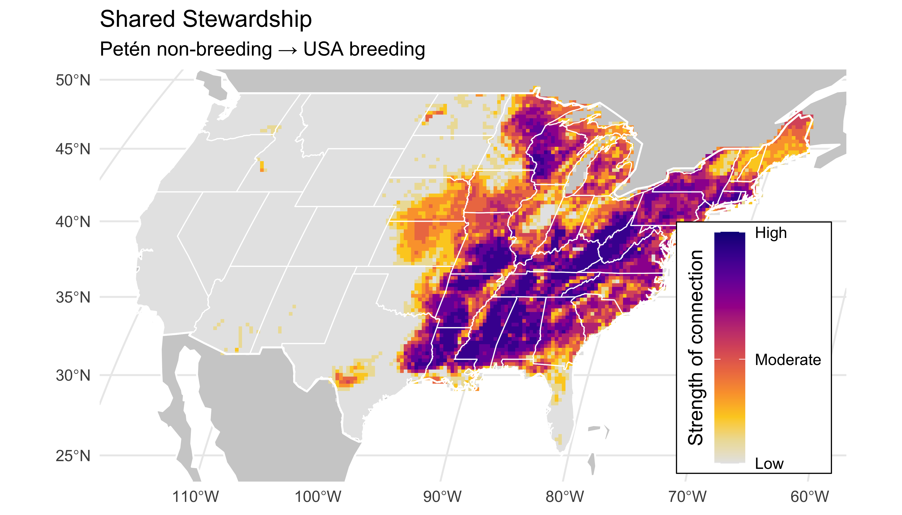

Background
Migratory birds connect geographies at the cross-continental scale. A Wood Thrush that breeds in the hardwood forests of New York state may spend the non-breeding season in the tropical forests of Guatemala’s Maya Biosphere Reserve. Regions that are linked by shared migratory species have a shared responsibility to steward them and the habitats they rely on. Effective conservation and management therefore requires coordination and collaboration at the hemispheric scale to address the complex factors affecting species across their full annual cycles.
The shared stewardship connections framework, developed by Partners in Flight and the Cornell Lab of Ornithology (Stewart et al. 2023; Lello-Smith et al. 2026), offers a way to highlight regions that are connected by shared migratory birds using eBird Status data products. For a focal region in one season, the framework generates a map showing where the species from that region concentrate most in another season. There are two general directions that these maps can be created for:
- Breeding → non-breeding: For species that spend the breeding season in a region, the shared stewardship maps highlight areas where those species concentrate in the non-breeding season.
- Non-breeding → breeding: For species that spend the non-breeding season in a region, the shared stewardship maps highlight areas where those species concentrate in the breeding season.
Specifically, we define a focal region (e.g., New York, USA), an origin season (e.g. breeding), and a destination season (e.g., non-breeding), then we
- Identify all species of interest that occur in the focal region during the origin season.
- For each of these species, identify the proportion of the global population that spends the origin season within the focal region. These proportions act as weights.
- Calculate a cell-wise weighted sum, across the species of interest, of the destination season proportion of population rasters. The proportion of population weights ensure that species for which the focal region holds a larger share of the global population contribute more weight to the output surface. Essentially we are stacking and summing the proportion of population maps across the set of focal species, with each map weighted by the share of the species’ population that occurs within the focal region.
Important: This rasters resulting from this workflow shows multispecies abundance concentrations, not tracked migratory connectivity. The individual birds in a highlighted destination cell are not necessarily the same individuals that used the focal region in the other season. For site-level connectivity, tracking data (banding, telemetry, stable isotopes) is required. This framework is best suited for regional-scale conservation planning and partnership identification.
This vignette starts with two simple examples showing the basic functionality of the shared stewardship framework, then dives deeper into the methodology and more demonstrates how the framework operates in more complex scenarios.
Data access
stewardship_connections() downloads all required proportion-of-population rasters automatically on first run. A data access key is required. All examples in this vignette use 27 km resolution to keep downloads fast (a few hundred KB per species). For site-level planning or higher-resolution maps, 9 km or 3 km data can be used via resolution = "9km" or resolution = "3km", at the cost of larger downloads and longer processing — see ?stewardship_connections for guidance.
Breeding to non-breeding: New York State to Central America
During the breeding season, New York State hosts a variety of neotropical migrants such as Wood Thrush, Rose-breasted Grosbeak, Blue-winged Warbler, Gray Catbird, and many others. Where do those species concentrate during the non-breeding season, i.e. the northern winter?
The stewardship_connections() function implements the shared stewardship framework. For regions that already have pre-calculated regional stats in ebirdst_regional_stats(), we can simply provide the origin region code to stewardship_connections(). The function looks up the pre-computed statistics for that region, determines which species have enough of their breeding population there (default: ≥ 0.01%), filters for genuinely migratory species (default: ≥ 85% of the population leaves during the stationary non-breeding season), stacks the non-breeding proportion-of-population rasters, and takes a weighted some across species using the per-species proportion of breeding population within the origin region as the weight.
Since some species have quite broad distributions — like the globally distributed Osprey or Barn Swallow — it’s typically necessary to define a focal extent for the shared stewardship maps. For this simple example, we’ll use a bounding box roughly encompassing Central America and the Caribbean.
# bounding box for Central America
ca_bbox <- st_bbox(
c(xmin = -94.5, xmax = -73.5, ymin = 6.5, ymax = 23.5),
crs = st_crs(4326)
) |>
st_as_sfc()
# generate shared stewardship surface
result_ny <- stewardship_connections(
region_code = "USA-NY",
origin_season = "breeding",
destination_mask = ca_bbox
)The result is a named list. The weights element shows the species retained and how much each one contributes:
head(result_ny$weights)
#> species_code common_name origin_season weight
#> 1 acafly Acadian Flycatcher breeding 0.001969884
#> 2 aldfly Alder Flycatcher breeding 0.009406650
#> 3 amekes American Kestrel breeding 0.002392799
#> 4 ameoys American Oystercatcher breeding 0.012266127
#> 5 amered American Redstart breeding 0.027801092
#> 6 amewoo American Woodcock breeding 0.030762093
#> rel_pct_decrease
#> 1 1.0000000
#> 2 1.0000000
#> 3 0.8700286
#> 4 0.9770798
#> 5 0.9999955
#> 6 0.9887122Each row is a species retained after filtering. The weight column is the fraction of the global breeding population in New York (from total_pop_percent in the regional stats). rel_pct_decrease shows what fraction of the origin-season population had departed by the destination season — a high value confirms a genuinely migratory species.
To map the results, we’ll use importance_breaks()` to computes quantile-based breaks that concentrate the color ramp on the strongest connections: the lowest half of non-zero cells get lumped into a bin that we’ll hide and the top half of non-zero cells will be split into 10 quantile breaks.
# country and destination region polygons
countries <- ne_countries() |>
st_transform(crs(result_ny$connection)) |>
st_geometry()
ca_bbox_proj <- ca_bbox |>
st_transform(crs(result_ny$connection))|>
st_geometry()
# quantile bins
brks <- importance_breaks(result_ny$connection)
pal <- c("#e6e6e6", ebirdst_palettes(length(brks) - 2))
# map
par(mar = c(0, 0, 3, 0))
plot(countries, col = "#cfcfcf", border = "#ffffff", extent = ca_bbox_proj)
plot(
result_ny$connection,
breaks = brks,
col = pal,
maxcell = ncell(result_ny$connection),
legend = FALSE,
add = TRUE
)
plot(countries, border = "#ffffff", lwd = 1, add = TRUE)
box()
title("Shared Stewardship\n(NY breeding → Central America non-breeding)")
In this map, darker purples highlight areas where the strength of the connection is highest, i.e. the areas where more New York State breeding species concentrate, while lighter yellows indicate areas where the strength of the connection is lower. Light gray is used for areas of low or no connection and dark gray is used for areas outside the destination region we defined (Central America).
A note on resolution: although the eBird Status data products are available at 3 km resolution, by default stewardship_connections() uses the coarser 27 km products since downloading and processing the 3 km data products for a large number of species can be quite time consuming. If you require the highest resolution map, use stewardship_connections(resolution = "3km"), however, this will often result in the need to download several GB of data.
Non-breeding to breeding: Petén, Guatemala to eastern North America
Lello-Smith et al. (2026) demonstrated how reversing the direction of this analysis identifies the sister landscapes of a focal non-breeding region: for a suite of species that spend the non-breeding season in a focal region, where do those species concentrate during the breeding season?
The Petén department of Guatemala is part of the Selva Maya, one of the Five Great Forests of Mesoamerica. Identifying its breeding-season counterparts helps conservation organizations in the region understand which parts of North America share a responsibility for the species they protect in winter.
The only change from the New York example is origin_season = "nonbreeding". The function selects species with ≥ 0.01% of their non-breeding population in Petén, filters for migratory species, and sums the breeding-season proportion-of-population rasters weighted by the proportion of the non-breeding population within Petén.
# identify the code for the Petén region
ebirdst_regional_stats() |>
distinct(region_type, region_name, region_code) |>
filter(region_type == "state", region_name == "Petén")
#> # A tibble: 1 × 3
#> region_type region_name region_code
#> <chr> <chr> <chr>
#> 1 state Petén GTM-1944
# use the continental USA as the destination region mask
usa_cont <- ne_states(iso_a2 = "US") |>
filter(!name %in% c("Alaska", "Hawaii"))
# generate the stewardship connections raster
result_pe <- stewardship_connections(
region_code = "GTM-1944",
origin_season = "nonbreeding",
destination_mask = usa_cont
)This time we’ll map the result using ggplot2 and tidyterra, which makes it easy to combine the raster with sf vector layers:
# country and destination region polygons
countries <- ne_countries() |>
st_transform(crs(result_pe$connection)) |>
st_geometry()
usa_cont_proj <- usa_cont |>
st_transform(crs(result_pe$connection))|>
st_geometry()
# quantile bins
brks_pe <- importance_breaks(result_pe$connection)
r_class <- importance_breaks(result_pe$connection, return_raster = TRUE)
n_bins <- length(brks_pe) - 1
bin_labels <- c("Low", rep("", n_bins - 2), "High")
ggplot() +
geom_sf(data = countries, fill = "#cfcfcf", color = "#ffffff", linewidth = 0.3) +
geom_sf(data = usa_cont_proj, fill = "#e6e6e6", color = NA, linewidth = 0.3) +
geom_spatraster(data = r_class) +
scale_fill_gradientn(
colours = c("#e6e6e6", ebirdst_palettes(n_bins - 1)),
na.value = NA,
limits = c(1, n_bins),
breaks = c(1, n_bins / 2, n_bins),
labels = c("Low", "Moderate", "High"),
name = "Strength of connection"
) +
geom_sf(data = usa_cont_proj, fill = NA, color = "#ffffff", linewidth = 0.3) +
geom_sf(data = countries, fill = NA, color = "#ffffff", linewidth = 0.5) +
coord_sf(xlim = st_bbox(usa_cont_proj)[c("xmin", "xmax")],
ylim = st_bbox(usa_cont_proj)[c("ymin", "ymax")]) +
labs(title = "Shared Stewardship",
subtitle = "Petén non-breeding → USA breeding") +
theme_minimal() +
theme(
legend.position = "inside",
legend.position.inside = c(0.98, 0.02),
legend.justification.inside = c(1, 0),
legend.key.height = unit(1.8, "lines"),
legend.title.position = "left",
legend.title = element_text(angle = 90, hjust = 0.5),
legend.background = element_rect(fill = "white", color = "black", linewidth = 0.3)
)
The breeding hotspots concentrate across the eastern and southeastern United States matching the pattern found by Lello-Smith et al. (2026) for the Selva Maya: the northernmost forests of Mesoamerica are most strongly connected to the eastern deciduous forest belt.
How the method works
Understanding the methodology helps practitioners interpret the output and make informed decisions about thresholds and inputs.
Species selection
Two thresholds control which species are included:
Origin threshold (min_origin_threshold, default 0.01%): a species must have at least 0.01% of its global population in the focal region during the origin season to be retained. This ensures the region has real stewardship responsibility. Raising the threshold focuses the analysis on species for which the region is especially important; lowering it broadens the species list to include species that use the region less intensively.
Migration threshold (min_migration_threshold, default 85%): at least 85% of the origin-season proportion of population must be absent from the focal region in the destination season. This ensures species are genuinely migratory — residents or partial migrants that remain in the region year-round are excluded. Lowering this threshold would include species that spend significant time in both seasons in the focal region.
Weighting
Each retained species contributes to the output raster in proportion to its stewardship weight — the fraction of its global population in the focal region during the origin season. A species for which the focal region holds 15% of the global breeding population contributes three times as much as one for which it holds 5%. The final map therefore emphasizes the winter destinations of species that depend most on the focal region rather than treating all migratory species equally.
In region-code mode, the weight is derived from max_week_percent_pop in the pre-computed regional statistics. In polygon mode (see Custom polygon mode), it is computed directly from the raster data for a user-supplied boundary.
The $weights output table reports weight as the global stewardship fraction. For practitioners whose mandate is continental rather than global, the total_pop_percent column in ebirdst_regional_stats() gives the population fraction relative to the global total, while continent_pop_percent gives the fraction within the continent — either can be used to construct a custom weights table (see Custom weights).
Interpreting the output
The output raster is a weighted sum of destination-season proportion-of-population rasters. Its absolute values are not directly interpretable as a probability or percentage, but its spatial pattern shows where the population supported by the focal region concentrates in the other season. It is a conservation prioritization surface — regions with high values are where the birds supported by your focal region need habitat, food, and protection.
What it is not: this is not a migratory connectivity metric. The individuals at a destination cell are not necessarily the same individuals that used the focal region. For bird-level connectivity, tracking data (banding, stable isotopes, telemetry) is required.
Custom polygon mode
Region-code mode works for areas with pre-computed statistics (countries, states, provinces). For a custom boundary — a watershed, a protected area, an IBA — use polygon mode: supply an sf or SpatVector polygon as origin_region and an explicit list of species.
Here we reproduce the West Virginia analysis using the state boundary from rnaturalearth, limited to five focal Appalachian neotropical warblers to keep the example fast to run:
wv_boundary <- ne_states(
country = "United States of America",
returnclass = "sf"
) |>
dplyr::filter(name == "West Virginia")
focal_spp <- c("cerwar", "woewar1", "louwat", "buwwar", "hoowar")
result_poly <- stewardship_connections(
species = focal_spp,
origin_region = wv_boundary,
origin_season = "breeding",
destination_mask = st_bbox(
c(xmin = -118, xmax = -34, ymin = -30, ymax = 33),
crs = st_crs(4326)
),
resolution = "27km"
)
result_poly$weightsThe polygon mode computes weights directly from the proportion-of-population rasters cropped to the supplied boundary — the same rasters used to build the connection surface. The weight values may differ slightly from the region-code mode equivalents because region-code mode uses pre-computed max_week_percent_pop statistics (the peak week in the season), whereas polygon mode uses the mean across all weeks in the stationary season.
Including migration seasons
For some species, the focal region is used as heavily or more heavily during migration than during the stationary breeding season. Setting include_migration_seasons = TRUE takes the maximum proportion of population across the breeding, pre-breeding migration, and post-breeding migration season layers, so species that concentrate in the region primarily as migrants can still be included. The default migration threshold is automatically relaxed to 50% in this case (since departure from a migratory stopover region is expected to be high).
result_mig <- stewardship_connections(
species = focal_spp,
origin_region = wv_boundary,
origin_season = "breeding",
include_migration_seasons = TRUE,
destination_mask = st_bbox(
c(xmin = -118, xmax = -34, ymin = -30, ymax = 33),
crs = st_crs(4326)
),
resolution = "27km"
)
result_mig$weightsThe max_origin_season column in $weights identifies which season layer produced the maximum weight for each species, making it easy to see which species are primarily breeding residents versus migrants in the focal region.
Custom weights
Sometimes you want full control over which species are included and how they are weighted — for example, a targeted analysis focused on species of conservation concern, or equal-weight species to highlight geographic overlap independent of stewardship responsibility. Weights-table mode accepts a data frame with species_code and weight columns.
Here we give equal weight to five Appalachian neotropical warblers, so each species contributes equally to the connection surface regardless of their population fractions in West Virginia:
concern_spp <- data.frame(
species_code = c("cerwar", "cangwa", "gowwar", "woewar1", "prawar"),
weight = rep(1 / 5, 5)
)
result_wl <- stewardship_connections(
species_weights = concern_spp,
origin_season = "breeding",
destination_mask = st_bbox(
c(xmin = -118, xmax = -34, ymin = -30, ymax = 33),
crs = st_crs(4326)
),
resolution = "27km"
)
result_wl$weightsThreshold arguments (min_origin_threshold, min_migration_threshold) and include_migration_seasons are ignored in weights-table mode — species are taken as supplied. This mode is especially useful for watch-list analyses, guild-specific studies, or any situation where you have external criteria for species selection and weighting.
Writing results to disk
For large species lists or fine resolutions (3 km), the connection raster can be written directly to a GeoTIFF rather than returned in memory. Pass a file path to the filename argument; additional arguments are forwarded to writeRaster():
stewardship_connections(
region_code = "USA-WV",
origin_season = "breeding",
destination_mask = st_bbox(
c(xmin = -118, xmax = -34, ymin = -30, ymax = 33),
crs = st_crs(4326)
),
resolution = "3km",
filename = "wv_connections_3km.tif",
gdal = "COMPRESS=DEFLATE"
)When filename is supplied, the return value is invisible and the function writes directly to disk, reducing peak memory use.